Using Deep Learning
Malaria is a life-threatening infectious disease caused by Plasmodium parasites transmitted via the bites of infected female Anopheles mosquitoes. Following erythrocytic invasion, parasites impair oxygen transport and provoke systemic inflammatory responses that, in the absence of timely treatment, can progress to organ failure and death. Of particular clinical concern is the parasite's capacity for prolonged dormancy, wherein infection may remain asymptomatic for over a year, substantially extending the window for undetected onward transmission.
According to the WHO, more than 229 million malaria cases and approximately 400,000 deaths were reported globally in 2019 alone. Sub-Saharan Africa bears a disproportionate share of this burden; children under five years of age account for 67% of all malaria-attributable deaths worldwide.
The conventional diagnostic method (microscopic examination of Giemsa-stained blood smear slides) is labor-intensive, time-consuming, and contingent on the availability of trained microscopists. In low-resource, high-burden settings, such expertise is frequently unavailable. Inter-observer variability further compromises diagnostic consistency at scale. Automated, deep learning-based detection directly addresses these constraints: convolutional neural network classifiers have demonstrated diagnostic accuracy comparable to skilled microscopy, while offering the additional properties of high throughput, continuous availability, and independence from observer fatigue.
- Build a reliable deep learning model that classifies microscopic blood cell images as either Parasitized or Uninfected.
- Minimize false negatives (missed infections) as they represent the most clinically consequential error in a diagnostic context.
- Evaluate and compare multiple model architectures to identify the best-performing approach for this dataset.
- Provide a well-reasoned proposal for which model should be adopted for deployment.
- Can a CNN learn discriminative visual features from cell images that reliably distinguish parasitized from uninfected cells?
- What preprocessing and data augmentation strategies improve model robustness and reduce overfitting?
- How does model complexity affect generalization to unseen images?
- Does transfer learning from MobileNetV2 / ImageNet outperform custom architectures trained from scratch?
The analytical task is formulated as a binary image classification problem addressed using supervised deep learning.
- Input: A single RGB microscopic blood cell image, resized to 64×64 pixels.
- Output: A binary prediction of
1(Parasitized) or0(Uninfected). - Primary Metric: Recall for the Parasitized class. In a medical screening context, the cost of a false negative far outweighs the cost of a false positive. Minimizing missed diagnoses is the governing objective.
- Supporting Metrics: Accuracy, Precision, F1-Score, and AUC-ROC.
The dataset consists of colored microscopic images of individual red blood cells, sourced from the NIH Malaria Dataset. Each image depicts a single cell labeled as either Parasitized (containing the Plasmodium parasite) or Uninfected.
| Split | Parasitized | Uninfected | Total |
|---|---|---|---|
| Training | 12,582 | 12,376 | 24,958 |
| Test | 1,300 | 1,300 | 2,600 |
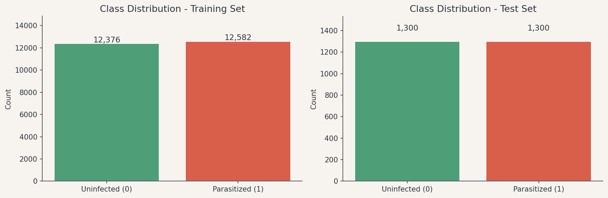
A stratified 80/20 split was applied to the training set to create a validation subset:
| Subset | Size |
|---|---|
| Train | ~19,966 images |
| Validation | ~4,992 images |
| Test (held out) | 2,600 images |
The dataset is approximately balanced, with approximately 50% Parasitized and 50% Uninfected images in both splits. This balance renders accuracy a valid and interpretable primary metric: the model must learn to discriminate between classes rather than exploit a majority-class shortcut, and no resampling or class weighting is required in the baseline training configuration.
Visual inspection reveals systematic and discriminable morphological differences between classes. Parasitized cells exhibit dark staining artifacts which is the visible signature of Plasmodium trophozoites or ring-forms within the cell. Uninfected cells appear uniformly pale or pink with a smooth, homogeneous internal structure. These differences in texture, color distribution, and intracellular morphology constitute the spatial and spectral features that convolutional filter banks are suited to extract.

Analysis of per-channel pixel intensity distributions reveals subtle but systematic differences between classes. Parasitized cells exhibit intensity shifts most prominently in the red and blue channels, consistent with the selective absorption and binding properties of Giemsa stain in the presence of the parasite.
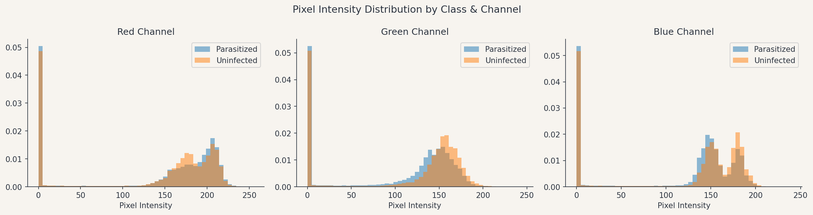
The same signal can also be visualized spatially. Mean pixel values computed per channel (by subtracting Uninfected from Parasitized) show where in the cell frame the chromatic difference is concentrated. In original (non-augmented) images, the signature clusters near the cell center, consistent with the parasite occupying a predictable position within the segmented crop.
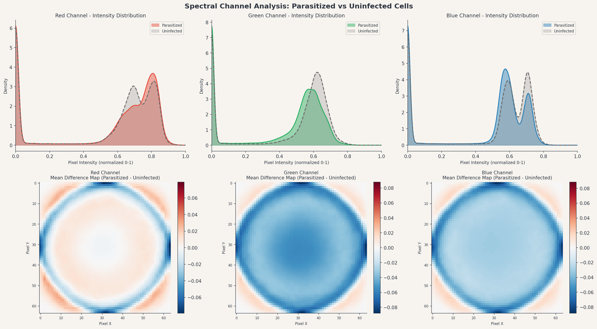
Original images vary in pixel dimensions, ranging approximately from 100 to 200 pixels in width and height. A uniform input size of 64×64 pixels was selected, balancing spatial detail against computational efficiency. Images were resized using bilinear interpolation via PIL.
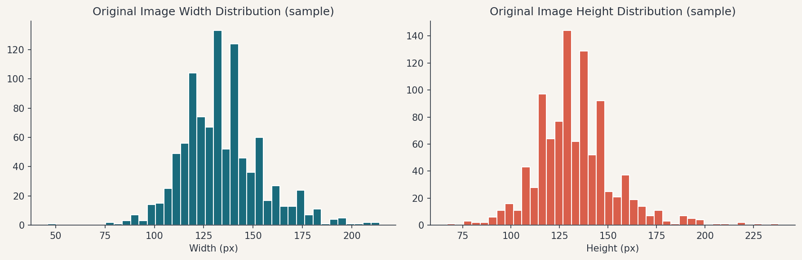
| Step | Detail |
|---|---|
| Resizing | All images resized to 64×64 RGB |
| Normalization | Pixel values scaled from [0, 255] → [0.0, 1.0] |
| Train/Validation Split | 80/20 stratified split from training data |
| Data Augmentation | Applied dynamically during CNN2 and CNN3 training (see Section 3.2) |
The near-perfect class balance has a direct implication for the modeling strategy: equal class representation throughout training ensures balanced gradient contributions from both classes. No trivially exploitable majority-class shortcut is available. This simplifies the baseline training configuration, as neither resampling nor class weighting is required, and permits accuracy to serve as a reliable indicator of balanced performance across both classes throughout training.
Three distinct modeling approaches were implemented and evaluated, progressing from a simple baseline through to a fine-tuned transfer learning model. A fourth model (CNN3) was added as a controlled experiment to isolate the effect of training configuration on the CNN2 architecture.
The baseline model is a custom CNN with three convolutional blocks of increasing depth that progressively extract spatial and textural features from the cell image, followed by a fully connected classification layer with dropout regularization to reduce overfitting. Training used the Adam optimizer with binary cross-entropy loss, early stopping, and learning rate reduction on plateau. Full architectural specifications are provided in Appendix A.
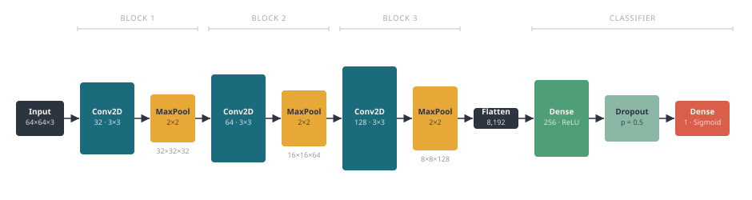
The baseline CNN trained for - epochs before early stopping triggered, with optimal weights restored from epoch - (validation loss: -). Training accuracy reached -, while validation accuracy held at -. The loss curves diverge from the best epoch onward: training loss continued to decline while validation loss increased, the characteristic signature of overfitting. Generalizable learning was concentrated in the early epochs; subsequent training epochs extracted noise rather than transferable signal. Although the accuracy differential is modest (~1%), the loss divergence indicates that continued training extracts training-specific noise rather than generalizable signal. This pattern motivates the architectural and training modifications introduced in CNN2.
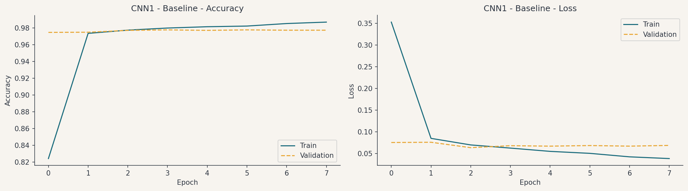
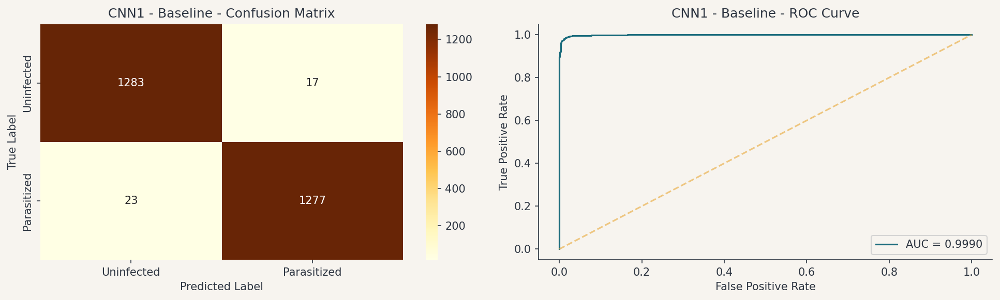
To address overfitting and improve generalization, CNN2 introduced data augmentation applied dynamically during training, along with architectural improvements.
| Technique | Parameter |
|---|---|
| Random rotation | ±20° |
| Horizontal flip | Enabled |
| Vertical flip | Enabled |
| Width / height shift | ±10% |
| Zoom | ±10% |
The architecture was also regularized more aggressively: normalization layers were added after each convolutional step to stabilize training, and the final feature aggregation approach was changed to one that reduces the total parameter count and further constrains overfitting. Full architectural specifications are provided in Appendix A.
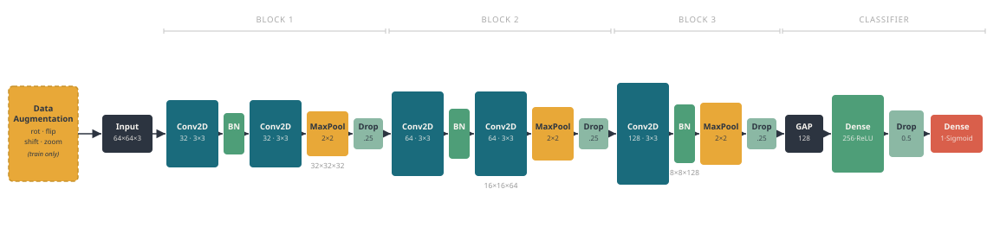
The augmentation pipeline applies random transformations to each training batch. The examples below illustrate the range of variation a single cell image may undergo prior to presentation to the model.
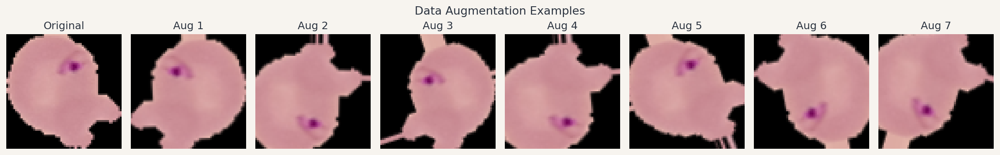
The difference maps below compare mean pixel differences between classes computed on original images (top row) and augmented images (bottom row), across all three channels.
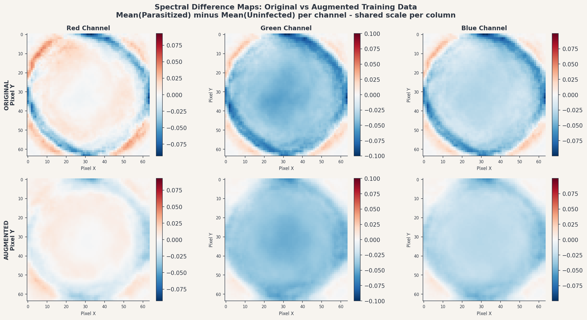
In the original maps, the parasite signature appears as a localized cluster concentrated toward the image center, reflecting the parasite's predictable position in pre-segmented crops. In the augmented maps, that signature becomes diffuse and rotationally symmetric. The core chromatic signal caused by Giemsa staining (red channel suppression, blue channel elevation) remains detectable throughout, but is distributed across positions and orientations rather than concentrated at a fixed spatial location. CNN2 is consequently trained on representations in which positional shortcuts are unavailable, compelling the model to rely on spectral and textural characteristics rather than spatial location for class discrimination.
CNN2 introduces two categories of change simultaneously: augmented training data and a more regularized architecture (BatchNormalization, block-level Dropout, GlobalAveragePooling2D). Performance differences between CNN1 and CNN2 cannot be attributed cleanly to augmentation alone. In a production setting, these variables would be tested in isolation. For this analysis, CNN2 is treated as a combined improvement package; any performance gain is the aggregate effect of both changes.
CNN2 trained for - epochs before early stopping triggered. This was notably fewer than CNN1's -. Training accuracy (-) and validation accuracy (-) remained within 0.5% of each other throughout, a substantially tighter gap than CNN1. The augmentation and architectural changes appear to have attenuated overfitting pressure during training. The training curves do not, however, capture the output miscalibration that manifests upon evaluation.
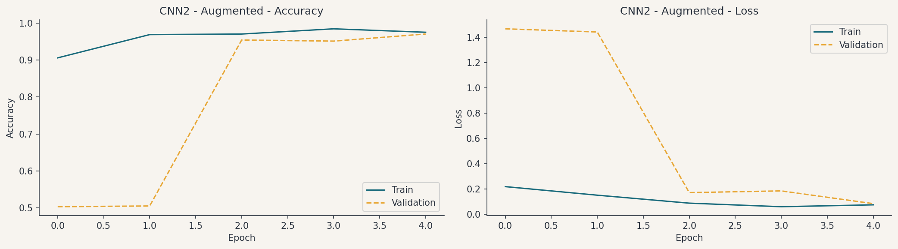
Notwithstanding the favorable training curve characteristics, CNN2's default-threshold evaluation yields a recall of - for the Parasitized class - - false negatives out of 1,300 Parasitized images. The AUC-ROC of - confirms strong underlying discriminative capacity. This discrepancy is indicative of an output calibration failure: sigmoid output probabilities are concentrated substantially below 0.5, causing the default threshold to misclassify the majority of Parasitized cells as Uninfected.
Thresholds from 0.01 to 0.55 were scanned and Recall, Precision, and F1-Score computed at each point. The scan identifies two clinically relevant operating points: the threshold that maximizes F1-Score, and the lowest threshold that achieves at least 95% recall.
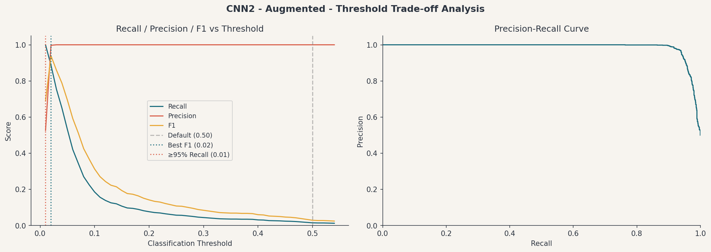
CNN2 actually learned to distinguish the two cell types quite well. Something about its training caused output probabilities to cluster near zero rather than spread naturally across the 0–1 range, meaning the model's learned signal was not being correctly translated into a usable confidence score at the default 0.5 cutoff. When the threshold is lowered to - to account for this, the model's real capability shows through.
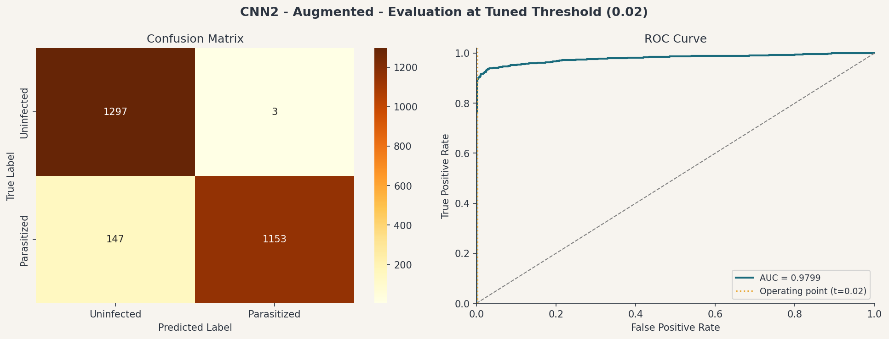
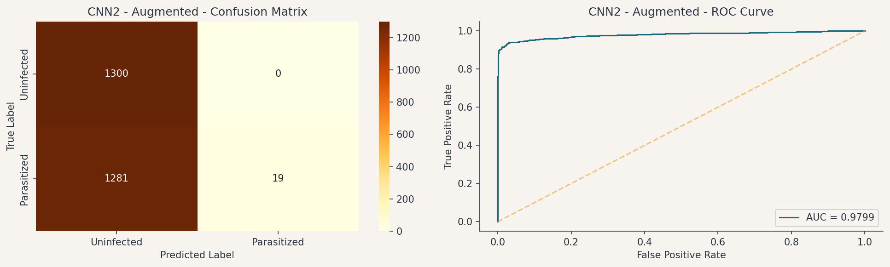
This analysis gave me the idea for CNN3. Rather than relying on post-hoc threshold adjustment to recover discriminative performance, CNN3 addresses the underlying calibration failure through class weighting during training, so that output probabilities are appropriately distributed from the outset.
CNN3 maintains the CNN2 architecture and augmentation pipeline exactly, varying only the training configuration. Because architecture and augmentation remain constant between CNN2 and CNN3, any performance differential between the two models can be attributed specifically to the training configuration, constituting the first controlled comparison in this experimental sequence.
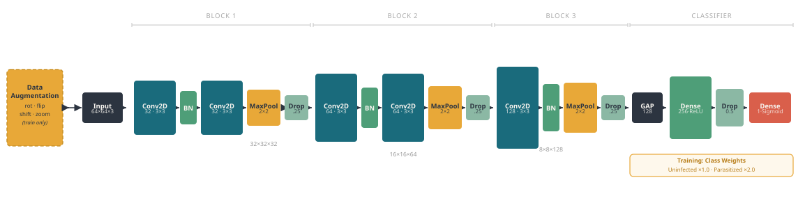
- Class weighting (2:1, Parasitized:Uninfected): Doubles the loss contribution of false negatives relative to false positives, directing the optimizer toward correct identification of Parasitized cells.
- Early stopping on validation loss: A first run of CNN3 using raw recall as the stopping criterion produced model collapse. Without a precision constraint, recall is erroneously maximized by classifying all instances as Parasitized. Monitoring validation loss instead preserves the corrective effect of class weighting while preventing this outcome.
- Recall tracked during training: Recall was added as a monitored metric throughout training, enabling direct observation of whether class weighting was achieving its intended effect epoch by epoch.
Class weighting eliminated the output miscalibration observed in CNN2. CNN3 achieves - recall at the default 0.5 threshold - compared to CNN2's - - with only - missed Parasitized cells out of 1,300 (- false negative rate). AUC-ROC reached -, the highest of any model evaluated. The model trained for - epochs, with optimal weights restored from epoch -. The final validation recall of - closely approximates the test recall, consistent with stable generalization to held-out data. This improvement entailed a modest increase in false positives: - Uninfected cells classified as Parasitized (- false positive rate). In a primary screening context, false positives precipitate confirmatory review rather than missed treatment, rendering this an acceptable trade-off.
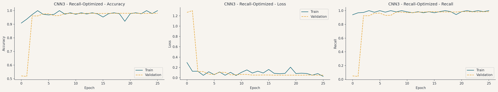
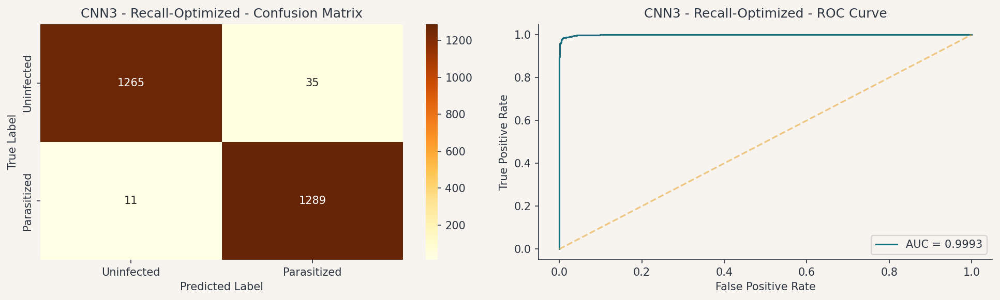
The third approach uses MobileNetV2 as a feature extraction backbone - a lightweight CNN pre-trained on ImageNet (1.28 million images across 1,000 categories). Transfer learning was applied in two phases.
- It achieves competitive accuracy with substantially fewer parameters than a comparable standard CNN, reducing training time and computational cost.
- Its architecture is specifically designed to support stable fine-tuning, making it well-suited to domain adaptation tasks like this one.
- The low parameter count enables efficient inference on modest hardware - a realistic requirement for clinical field deployment in low-resource settings.
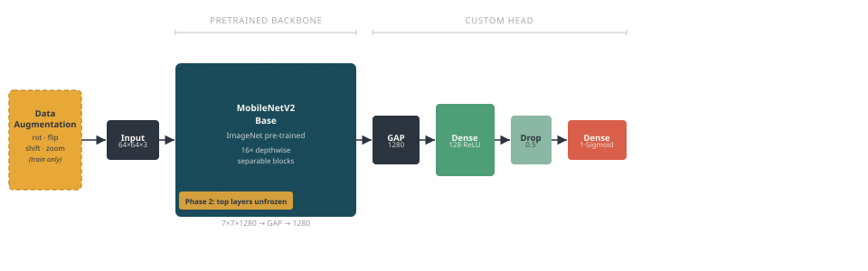
The MobileNetV2 backbone was frozen in its entirety, preserving all features learned from ImageNet. Only the custom classification head appended to the backbone was trained. This approach leverages the pre-trained feature representations without risk of overwriting them before the classifier has stabilized.
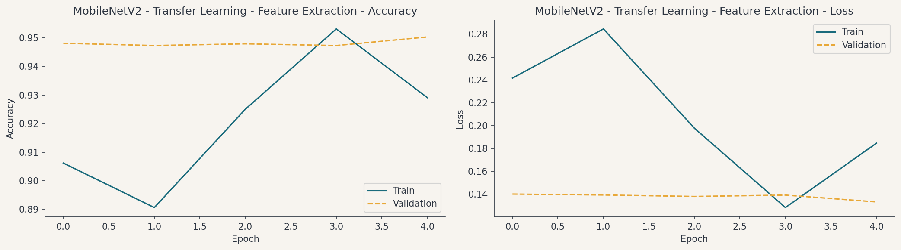
The deepest layers of the backbone were unfrozen and retrained at a substantially reduced learning rate. This permits those layers to adapt to the morphological characteristics specific to Giemsa-stained malaria microscopy, while the earlier layers - which encode broadly transferable low-level features - remain stable.
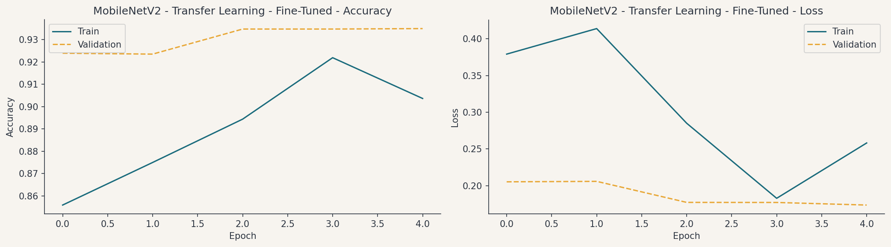
MobileNetV2 achieved - recall and AUC-ROC of - on the held-out test set, with - false negatives out of 1,300 Parasitized images (- false negative rate). Despite competitive AUC-ROC, recall falls below both CNN1 and CNN3 on the primary metric. The modest transfer advantage is likely attributable to a combination of domain mismatch - ImageNet features learned on natural scene photographs do not transfer directly to 64×64 Giemsa-stained microscopy crops - and an insufficient number of fine-tuning epochs. The MobileNetV2 backbone remains a viable candidate for future investigation at higher input resolutions (128×128 or 224×224) with extended fine-tuning.
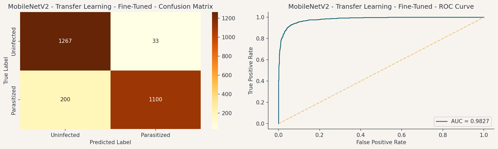
In a medical screening context, the two types of classification errors carry very different costs:
- False Negative: A Parasitized cell predicted as Uninfected - a missed diagnosis. The patient receives no treatment, the infection progresses, and there is ongoing transmission risk.
- False Positive: An Uninfected cell predicted as Parasitized - an incorrect positive. The patient undergoes confirmatory testing or receives treatment unnecessarily. Costly and disruptive, but not life-threatening.
Given this asymmetry, Recall for the Parasitized class is the governing metric. AUC-ROC is reported as a threshold-independent measure of discriminative power.
| Model | Threshold | Accuracy | Precision | Recall ↑ | F1-Score | AUC-ROC |
|---|---|---|---|---|---|---|
| Loading from results.json… | ||||||
All metrics are reported on the held-out test set (2,600 images). Recall and Precision refer to the Parasitized (positive) class. Best recall row is highlighted.
Confusion matrices were computed on the held-out test set for all models. The primary diagnostic quantity in each is the false negative count - the number of Parasitized cells incorrectly classified as Uninfected.
- CNN1 Baseline: - false negatives out of 1,300 (- FNR), representing a strong baseline for a single-stage architecture trained without augmentation.
- CNN2 (default threshold): - false negatives (- FNR) - near-complete failure attributable to sigmoid output miscalibration at the default threshold.
- CNN2 (tuned threshold): - false negatives (- FNR). Post-hoc threshold adjustment recovers the model's latent discriminative capacity.
- CNN3 Recall-Optimized: - false negatives (- FNR) - the lowest false negative count of any model evaluated.
- MobileNetV2 (Fine-tuned): - false negatives (- FNR). Despite competitive AUC-ROC, approximately 15% of Parasitized cells were misclassified as Uninfected.
| Model | Strengths | Limitations |
|---|---|---|
| CNN1 | Simple, fast to train; fewest parameters and shallowest architecture of the four models | Higher overfitting risk; limited feature extraction depth |
| CNN2 | Architecture improvements and augmentation; reduced overfitting during training | Training configuration caused sigmoid miscalibration, collapsing recall to near zero at default threshold |
| CNN3 ★ | Controlled comparison to CNN2: same architecture and augmentation, corrected training configuration; class weighting directly penalizes missed detections | Class weighting is a hyperparameter requiring tuning; correcting the training setup produces a distinct model rather than a direct repair of CNN2 |
| MobileNetV2 | Competitive AUC-ROC; proven architecture at scale; strong candidate at higher input resolutions | Recall (84.62%) below CNN1 and CNN3 at 64×64; domain gap limits transfer advantage at low resolution; requires two-phase training |
Note on interpretability: All four models share a common limitation - as neural networks, they produce predictions without an intrinsic explanation of which image features drove the decision. This black-box property applies equally across CNN1, CNN2, CNN3, and MobileNetV2, regardless of architectural complexity. The performance-interpretability trade-off is discussed in Section 5.4.
- Increasing input resolution from 64×64 to 128×128 or 224×224 would preserve more spatial detail and likely improve recall, at the cost of longer training time.
- Focal loss (a variant of cross-entropy that down-weights easy negatives) would more aggressively penalize hard-to-classify Parasitized cells beyond what class weighting alone achieves.
- Ensemble methods - combining predictions from two or more models - could push performance above any individual model.
- Test-time augmentation (averaging predictions over multiple augmented versions of each test image) is a low-cost technique that often yields 1-2% improvements in recall.
Based on the comparative analysis, CNN3 - Recall-Optimized is the recommended model for deployment. It achieves 99.15% recall on the held-out test set - only 11 missed Parasitized cells out of 1,300 - with an AUC-ROC of 0.9993, the highest of any model evaluated. Critically, this performance is achieved at the default 0.5 classification threshold and does not depend on post-hoc calibration. Agreement between the final validation recall (98.45%) and the test recall is consistent with stable generalization to held-out data.
Despite the anticipated advantage of ImageNet pre-training, MobileNetV2 achieved only 84.62% recall at this dataset and input resolution. The underperformance is most plausibly attributable to a combination of domain mismatch - ImageNet features trained on natural scene photographs do not transfer directly to 64×64 Giemsa-stained microscopy crops - and an insufficient number of fine-tuning epochs to overcome this mismatch. The MobileNetV2 backbone remains a viable candidate for future investigation at higher input resolutions with extended fine-tuning.
CNN3's performance advantage over the other models derives from two primary contributing factors: the alignment of the training objective with the clinical cost structure, and the training duration achieved.
- Class weighting aligns the training objective with the clinical cost structure: Standard binary cross-entropy assigns equal loss to a missed Parasitized cell and a missed Uninfected cell. CNN3's class weight of 2:1 doubles the loss contribution of each false negative. The optimizer is therefore penalized specifically for the failure mode of greatest clinical consequence, shifting the learned decision boundary toward the Parasitized class.
- Training duration and convergence: CNN3 trained for 26 epochs (optimal weights from epoch 21), compared to CNN2's 5. Augmented training data requires additional passes to develop stable feature representations; CNN3's training configuration permitted this process to reach an adequate conclusion.
- Architecture was not the binding constraint: CNN3 employs the CNN2 architecture without modification. The observed performance differential confirms that the CNN2 architecture possesses sufficient representational capacity; the original training configuration, not the architecture, was the limiting factor. These results underscore that architectural depth alone is insufficient to guarantee high recall - the composition of the training objective is equally determinative.
- Speed: The model processes a single cell image in milliseconds, enabling high-throughput screening of blood smear samples that would take a human microscopist hours to review.
- Consistency: The model applies the same learned decision boundary to every image, regardless of time of day, case volume, or operator experience - eliminating the observer fatigue and inter-rater disagreement that undermine manual review at scale.
- Deployability: CNN3's compact architecture runs efficiently on modest hardware and is a realistic candidate for field deployment in low-resource settings, without requiring specialized infrastructure.
- Recall: At 99.15% recall on the held-out test set, the model misclassifies approximately 1 in 118 Parasitized cells as Uninfected. For a screening instrument deployed in advance of expert confirmatory review, this false negative rate represents a clinically meaningful improvement over manual microscopy in high-throughput, low-resource settings.
- Triage integration: CNN3's continuous probability output enables a confidence-based referral layer at no additional training cost. Applied to the test set with a band of 0.35–0.65, only -% of slides required expert review, while reducing false negatives in the automated bucket from - to -. This directly addresses the highest-risk failure mode without any model changes.
The two figures below present the complete miscategorization picture under the confidence-based triage configuration (band 0.35–0.65). The first examines what happens within the referred bucket - how the - slides flagged for review break down by ground truth and implied model prediction. The second extends the view to the full test set, showing all three decision zones simultaneously.
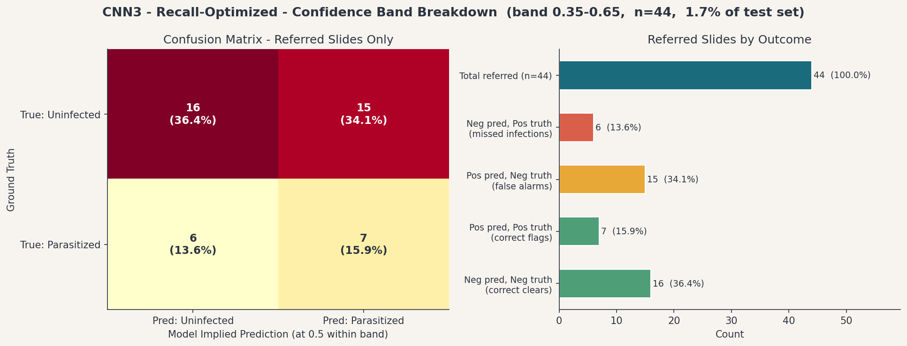
The full triage confusion matrix below shows the three decision zones side by side. The cell to focus on is the confident false negative which represents Parasitized slides the model cleared automatically with high certainty. With the triage layer active, that count falls to - out of 1,300 Parasitized images. The amber column shows what the referral layer intercepts: any Parasitized case in that column reaches a human reviewer rather than being silently passed through.
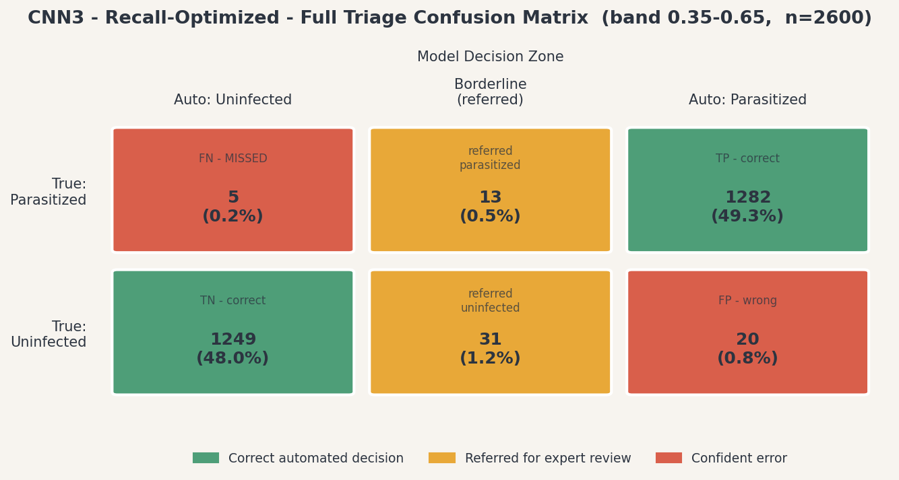
One trade-off inherent in recommending a deep learning model for clinical use is interpretability. CNN3, like all neural networks of this type, is a black box: it produces a probability score without an intrinsic explanation of which features of the image drove the decision. A simpler, more directly auditable model would not approach the recall performance achieved here. For a first-line screening tool operating ahead of expert confirmatory review, this trade-off is acceptable: no treatment decision is made on the model's output alone, and the reduction in missed diagnoses is the governing clinical priority.
CNN1 - Baseline
- Conv Block 1: Conv2D(32 filters, 3×3, ReLU) + MaxPooling2D
- Conv Block 2: Conv2D(64 filters, 3×3, ReLU) + MaxPooling2D
- Conv Block 3: Conv2D(128 filters, 3×3, ReLU) + MaxPooling2D
- Flatten
- Dense(256, ReLU) + Dropout(0.5)
- Dense(1, sigmoid) — output
CNN2 - Augmented
- Data Augmentation (rotation ±20°, horizontal/vertical flip, shift ±10%, zoom ±10%)
- Conv Block 1: 2× Conv2D(32, ReLU) + BatchNormalization + Dropout(0.25) + MaxPooling2D
- Conv Block 2: 2× Conv2D(64, ReLU) + BatchNormalization + Dropout(0.25) + MaxPooling2D
- Conv Block 3: 2× Conv2D(128, ReLU) + BatchNormalization + Dropout(0.25) + MaxPooling2D
- GlobalAveragePooling2D
- Dense(256, ReLU) + Dropout(0.5)
- Dense(1, sigmoid) — output
CNN3 - Recall-Optimized
- Architecture: identical to CNN2 (see above)
- Training change: class weighting — Parasitized loss penalty 2×, Uninfected 1×
- Early stopping monitored on validation loss (not recall)
- Recall tracked as a compiled metric throughout training
- Dense(1, sigmoid) — output at default 0.5 threshold
MobileNetV2 - Transfer Learning
- Data Augmentation (same pipeline as CNN2/CNN3)
- MobileNetV2 backbone — pre-trained on ImageNet (1.28M images, 1,000 classes)
- Phase 1: backbone frozen — classification head trained only
- Phase 2: deepest backbone layers unfrozen — fine-tuned at reduced learning rate
- GlobalAveragePooling2D
- Dropout(0.3) + Dense(128, ReLU) + Dropout(0.3)
- Dense(1, sigmoid) — output
The following settings apply to all models unless noted otherwise.
| Parameter | Value |
|---|---|
| Input image size | 64×64 RGB |
| Optimizer | Adam |
| Loss function | Binary cross-entropy |
| Early stopping | Patience = 5 epochs (monitor: val_loss) |
| LR reduction on plateau | Factor = 0.5, Patience = 3, Min LR = 1e-6 |
| Batch size | 64 |
| Random seed | 42 |
CNN3 differences:
| Parameter | CNN3 Value |
|---|---|
| Class weight | {0: 1.0, 1: 2.0} (Parasitized penalized at 2x) |
| Compiled metrics | Accuracy, Loss, Recall (Recall added) |
Disease Burden and Clinical Motivation
- World Health Organization. World Malaria Report 2020. Geneva: WHO, 2020.
Dataset
- NIH Malaria Cell Images Dataset. U.S. National Library of Medicine. lhncbc.nlm.nih.gov
- Rajaraman, S. et al. (2018). Pre-trained convolutional neural networks as feature extractors toward improved malaria parasite detection in thin blood smear images. PeerJ, 6, e4568.
Model Architecture - Transfer Learning Backbone
- Sandler, M. et al. (2018). MobileNetV2: Inverted Residuals and Linear Bottlenecks. CVPR 2018.
Two-Stage Detection Pipeline (Future Work)
- Ren, S., He, K., Girshick, R., & Sun, J. (2015). Faster R-CNN: Towards Real-Time Object Detection with Region Proposal Networks. NeurIPS, 28. arxiv.org/abs/1506.01497
- Hung, J. et al. (2017). Applying Faster R-CNN for Object Detection on Malaria Images. CVPR Workshops.
- Baum, J. et al. (2021). Automated detection and staging of malaria parasites from cytological smears using CNNs. Biological Imaging, 1, e2. doi.org/10.1017/S2633903X21000015
Tools and Frameworks
- TensorFlow / Keras Documentation. tensorflow.org
This section captures analytical notes, limitations, and directions for exploration. It is not part of the formal report body.
Confidence-Based Triage: Abstention for Borderline Predictions
CNN3 outputs a continuous probability score between 0 and 1 for every cell image. The current deployment framing treats this as a binary decision at a fixed threshold (0.5). A more clinically robust approach introduces a three-way abstention classifier: a confidence band around the threshold within which the model declines to commit and instead flags the sample for expert review.
A representative operating configuration might be:
- Score < 0.35 - Uninfected (high confidence, automated)
- Score 0.35-0.65 - Borderline: refer to microscopist / pathologist
- Score > 0.65 - Parasitized (high confidence, automated)
The band boundaries are tunable: narrowing the band reduces human workload but allows more edge cases to be committed automatically; widening it catches more borderline cases at the cost of more referrals. The optimal configuration depends on available pathologist capacity and acceptable false negative tolerance at the facility level.
Validation on the held-out test set at band 0.35–0.65:
- -% of slides referred for expert review (- of - test images)
- Of those referred, - were Parasitized
- - false negatives remain in the automated Uninfected bucket, down from - at the default threshold with no triage
- A referral rate under 2% represents a manageable incremental workload relative to the clinical benefit
Two-Stage Detection Pipeline
The current models are single-stage classifiers: given a pre-segmented cell image, predict infected or uninfected. A more robust production architecture would decouple the problem into Stage 1 (spot detection: identify candidate locations within a cell where a suspicious inclusion is present) and Stage 2 (spot classification: classify each cropped candidate region as Plasmodium ring form, platelet, staining artifact, etc.). This mirrors clinical workflow, improves interpretability, and allows explicit contaminant rejection. Prior art: Hung et al. (2017, CVPR) applied Faster R-CNN to blood smear images, achieving 98% accuracy vs. 59% for a single-stage model. Baum et al. (2021) built a production-ready version (PlasmoCount) with AUC-ROC 0.98 on P. falciparum.
Ablation Study Design
The jump from CNN1 to CNN2 changed two things simultaneously: architecture and augmentation. This makes it impossible to attribute performance differences to either cause independently. A rigorous sequence would be: (1) CNN1 baseline, (2) CNN1 + augmentation only, (3) CNN2 architecture + augmentation. CNN3 provides one controlled comparison (architecture held constant), but a full ablation remains for follow-on work.
Spectral vs. Positional Confound in Difference Maps
The mean(Parasitized) - mean(Uninfected) difference maps conflate spectral signal (Giemsa staining color differences) with positional signal (the parasite tends to occupy the cell center). The KDE pixel intensity histograms are cleaner for spectral comparison. Future work: compute per-image channel means/ratios (R/G, B/G per cell) and compare distributions between classes to isolate color from spatial arrangement.
Plasmodium Species Generalization
The NIH dataset contains predominantly P. falciparum ring forms. Other species (P. vivax, P. ovale, P. malariae, P. knowlesi) have meaningfully different morphology. A model trained on this dataset is not validated for other species and may fail silently in regions where non-falciparum malaria is prevalent.
Single-Source Dataset and Cross-Site Generalization
All images come from one institution with one staining protocol and one imaging setup. Performance numbers reflect in-distribution generalization. Cross-site validation against images from different labs has not been performed and would be required before clinical deployment.
Grad-CAM for Model Interpretability
The current models produce a binary prediction with no explanation of which image region drove the decision. Grad-CAM uses the gradient of the class score with respect to the final convolutional feature maps to produce a heatmap. This would allow visual verification that the model is attending to the cell interior, surface cases where the model is making predictions based on staining artifacts, and serve as a proxy for Stage 1 localization in a two-stage pipeline. Straightforward to implement in Keras using tf.GradientTape against the last Conv2D layer.
Full Slide Processing Pipeline
The current model assumes pre-segmented 64×64 single-cell images as input. A production deployment pipeline would also need: (1) whole slide image ingestion, (2) cell segmentation (locate and crop individual RBCs), (3) per-cell classification (what this project does), and (4) slide-level aggregation (combine per-cell predictions into a slide-level diagnosis). Each stage introduces its own error rate; overall system recall is bounded by the weakest stage.